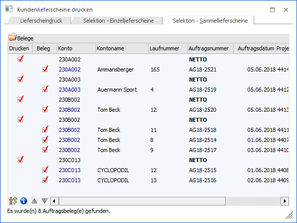
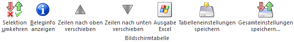

Nachdem im Register Lieferscheindruck die Vorselektion durchgeführt wurde, werden bei dem Wechsel in das Register "Selektion - Sammellieferscheine" automatisch alle Belege aufgelistet, welche den Selektionskriterien entsprechen. Ob ein Sammellieferschein erstellt werden soll oder nicht (bzw. welche Aufträge hierbei berücksichtigt werden sollen) kann mit Hilfe der Tabelle "Belege" manuell entschieden werden.
Hinweis
Die Aufträge werden zunächst immer anhand des Hauptkontos zusammengefasst. Innerhalb des Kontos werden dann einzelne Sammellieferscheine pro Lieferadresse, Fremdwährung, Brutto-/Netto-Kennzeichen der Preisliste und Summenrabatt gebildet. Es handelt sich hierbei um die sogenannte "Standardgruppierung". Mit Hilfe des Bereichs "Optionen für Sammellieferscheine" (siehe Register "Lieferscheindruck") kann die Sortierung und Gruppierung beeinflusst werden.

In der Tabelle werden die entstehenden Sammellieferscheine (Option "Drucken" steht zur Verfügung und die Kontonummer wird in schwarzer Schrift dargestellt) und die darin enthaltenen Aufträge (Option "Beleg" steht zur Verfügung und alle Daten des Belegs) aufgeführt. Hierbei stehen diverse Einstellungen zur Verfügung bzw. werden folgende Informationen angezeigt.
Hinweis
Neben den Standardspalten stehen über die rechte Maustaste (Funktion "Spalten anzeigen / verstecken") weitere Spalten (Gruppierung, Lieferadresse und Summenrabatt) zur Verfügung.
Ø Drucken
An dieser Stelle kann entschieden werden, ob der Sammellieferschein als solches erstellt werden soll oder nicht.
Ø Beleg
Mit Hilfe dieser Option kann definiert werden, ob der Auftrag in den Sammellieferschein übergeben werden soll.
Hinweis
Sollte die Option "Lieferdatum aus Auftrag als Lieferscheindatum übernehmen" (siehe Register "Lieferscheindruck") aktiviert worden sein, so beeinflusst die An- bzw. Abwahl von Aufträgen das Lieferscheindatum (siehe auch Spalte "Lieferscheindatum").
Ø Konto / Kontoname
In diesen Spalten werden die Kontonummern und die Namen der Auftragsbelege angezeigt.
Ø Laufnummer / Status / Auftragsnummer / Auftragsdatum / Projekt
In diesen Spalten werden die Daten der Auftragsbelege ausgewiesen.
Hinweis
In der Zeile des Sammellieferscheins wird in der Spalte "Laufnummer" auf eine ggfs. vorhandene Fremdwährung hingewiesen. Zusätzlich wird in der Spalte "Auftragsnummer" das Brutto-/Netto-Kennzeichen der Preisliste dargestellt.
Ø Lieferscheindatum
An dieser Stelle kann das Belegdatum für den Sammellieferschein hinterlegt werden. Falls kein Datum hinterlegt wird (d.h. das Feld ist / bleibt leer), dann wird bei Anwahl des Buttons "Ok" bzw. der Taste F5 automatisch das aktuelle Tagesdatum (Datum des Einlogvorgangs) als Belegdatum verwendet.
Hinweis
Durch Aktivierung der Option "Lieferdatum aus Auftrag als Lieferscheindatum übernehmen" (siehe Register "Lieferscheindruck") wird das Lieferscheindatum mit dem Lieferdatum aus dem ersten Auftrag vorbelegt, wobei ein Editieren möglich ist. Hierbei ist das Datum der ersten Artikelzeile aus dem Beleg ausschlaggebend (unabhängig davon, ob dieser Artikel geliefert wird).
Tabellenbuttons

Ø Selektion umkehren
Durch Anwahl des Buttons "Selektion umkehren" werden die selektierten Belege (Sammellieferscheine und Aufträge) deaktiviert und die nicht selektierten Belege aktiviert.
Ø Beleginfo anzeigen
Durch Anklicken des Buttons "Beleginfo anzeigen" wird eine Belegvorschau des ausgewählten Auftrags am Bildschirm ausgegeben. Auf einer Sammellieferscheinzeile steht diese Funktion nicht zur Verfügung.
Ø Zeilen nach oben verschieben / Zeile nach unten verschieben
Mittels dieser Buttons kann die Reihenfolge der Aufträge innerhalb eines Sammellieferscheins verändert werden.
Hinweis
Sollte die Option "Lieferdatum aus Auftrag als Lieferscheindatum übernehmen" (siehe Register "Lieferscheindruck") aktiviert worden sein, so beeinflusst das Verändern der Reihenfolge von Aufträgen das Lieferscheindatum (siehe auch Spalte "Lieferscheindatum").
Ø Ausgabe Excel
Durch Anwahl des Buttons "Ausgabe Excel" wird der Inhalt der Tabelle an Microsoft Excel übergeben.
Ø Tabelleneinstellungen speichern
Die Spalten einer Tabelle können grundsätzlich an beliebige Positionen verschoben, bzw. in der Breite entsprechend angepasst werden. Durch Anwahl des Buttons "Tabelleneinstellungen speichern" werden die Einstellungen benutzerspezifisch gespeichert und bei dem nächsten Aufruf des Programmpunktes wieder vorgeschlagen.
Ø Gesamteinstellungen speichern
Im Gegensatz zu "Tabelleneinstellungen speichern" können mit "Gesamteinstellungen speichern" mehrere Tabellenaufbauten gespeichert und nach Wunsch geladen werden. Zusätzlich werden Sonderfunktionen der Tabelle (z.B. "Spalte gruppieren") ebenfalls bei der Speicherung bedacht.